Off the clock · Woodturning
Bat No. 01
A side project from the shop. I turned this bat on the lathe, painted it and took it to the cage. Four sessions, September 7 to October 3, 2026.
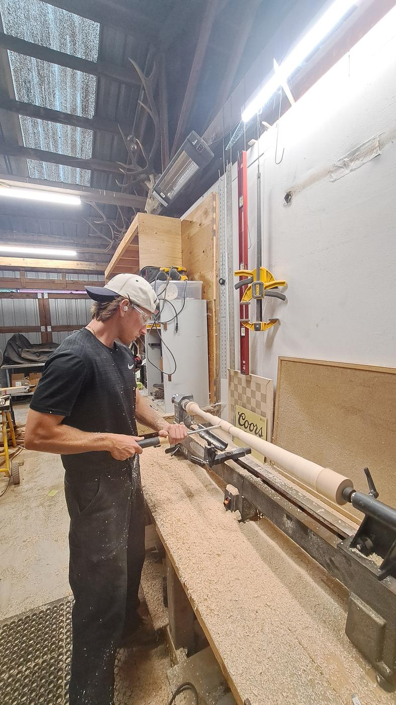
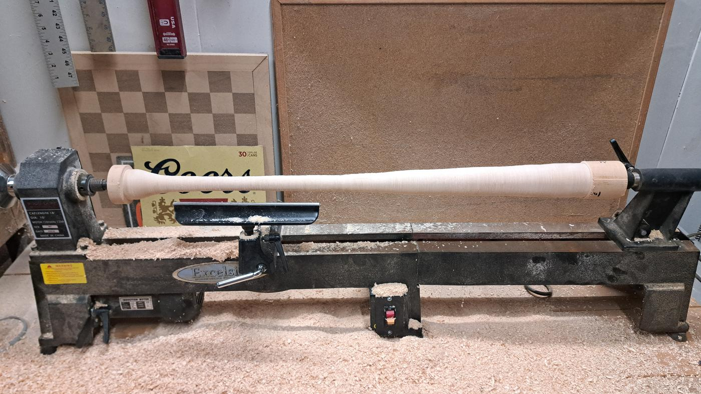
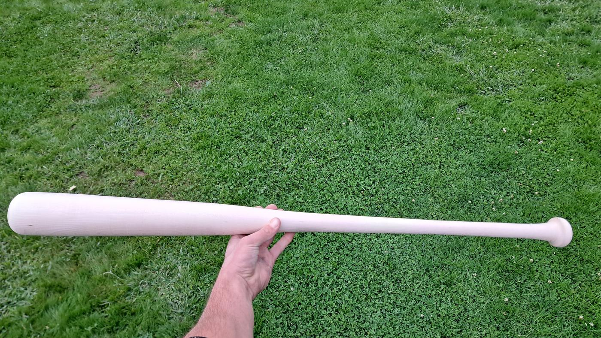
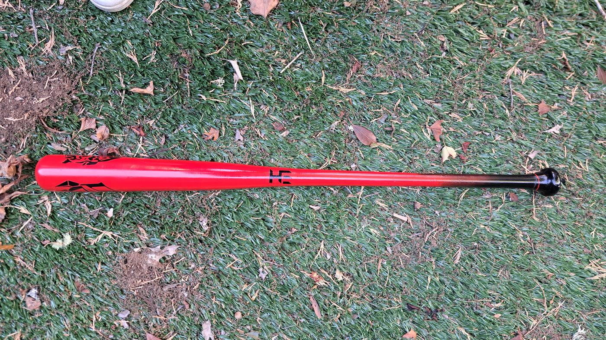
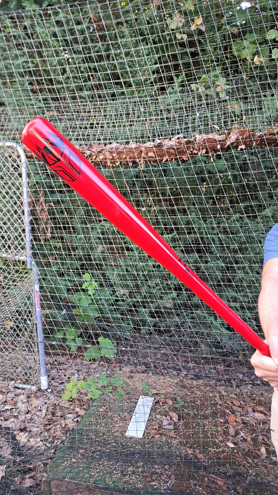
- Turned
- Sep 7 – 13, 2026
- Finished
- Oct 3, 2026
- Finish
- Black base coat, red barrel, black handle, EH logo
- Tools
- Wood lathe, turning tools, tape measure
Build Log
Logged like a product build: one entry per session, with photos from that day.
-
Session 01Sep 07 2026
Blank to rough profile
Mounted the blank between centers and cut sizing grooves along its length to set the diameters, then took it down to a rough bat shape and kept refining the handle and barrel.
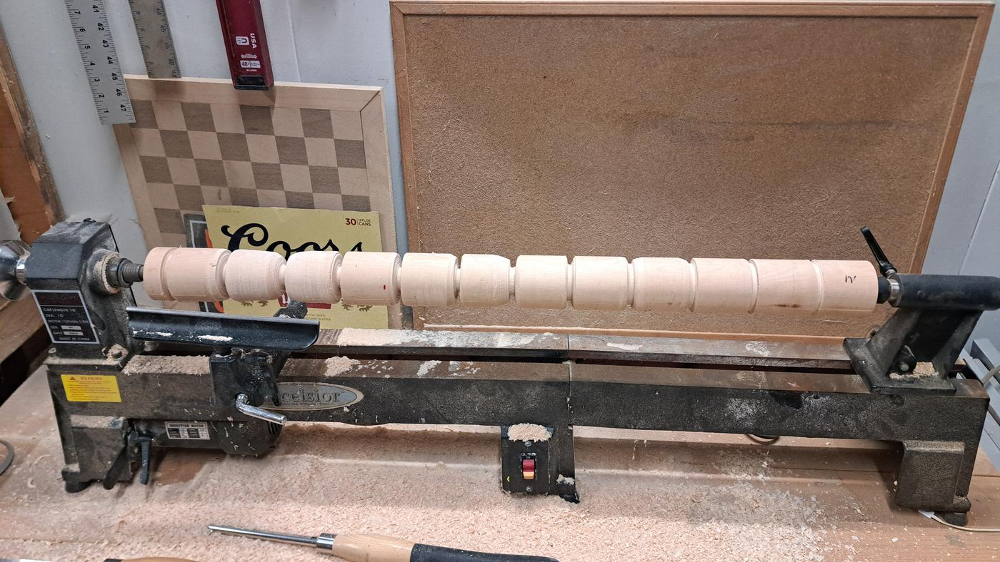
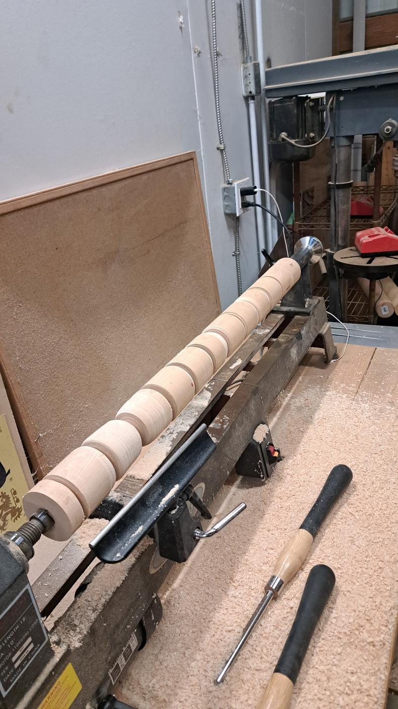
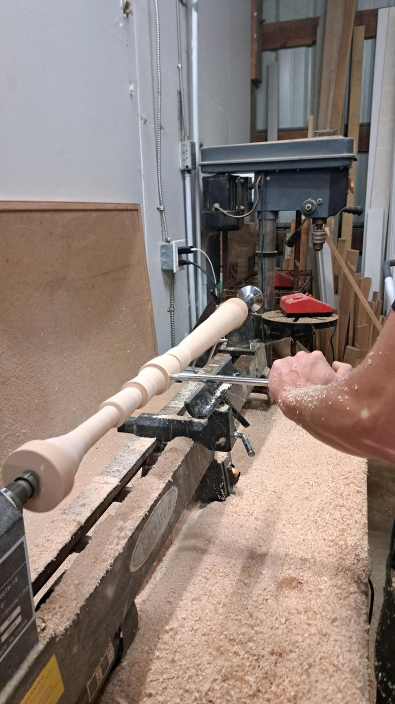
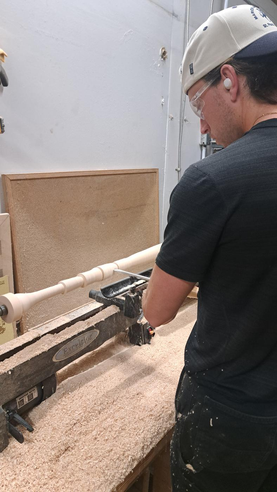
-
Session 02Sep 13 2026
Final profile, off the lathe
Finished the profile, smoothed the surface and took the bat off the lathe in raw wood.
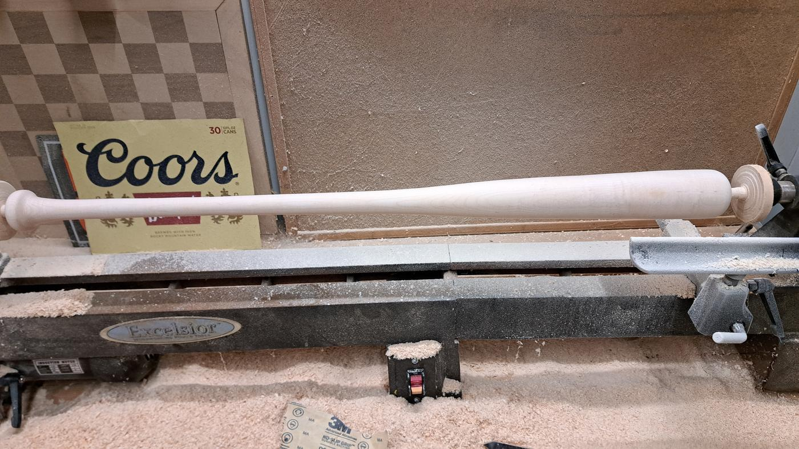
-
Session 03Sep 20 2026
Base coat
A full black base coat to build the color on.
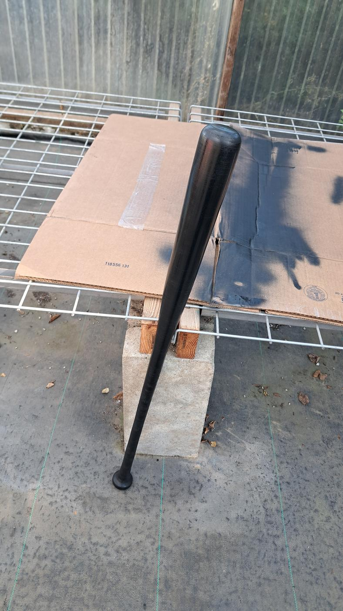
-
Session 04Oct 03 2026
Color, logo, first swings
Red barrel, black handle and my EH logo. Then straight to the batting cage.
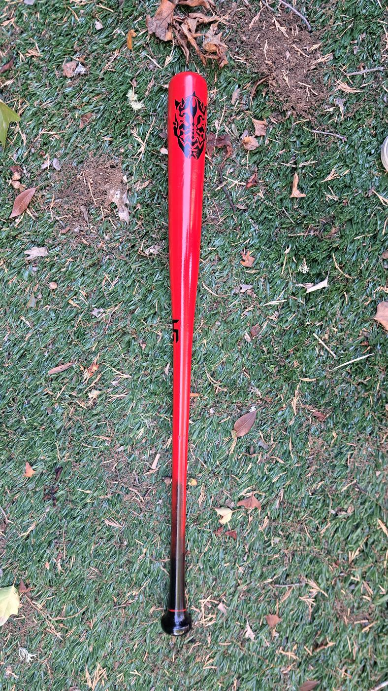
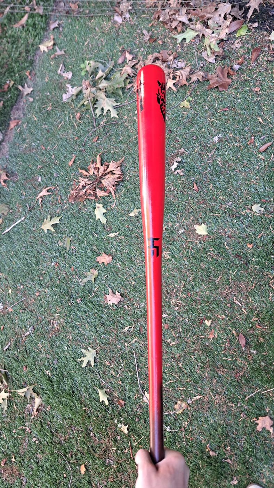